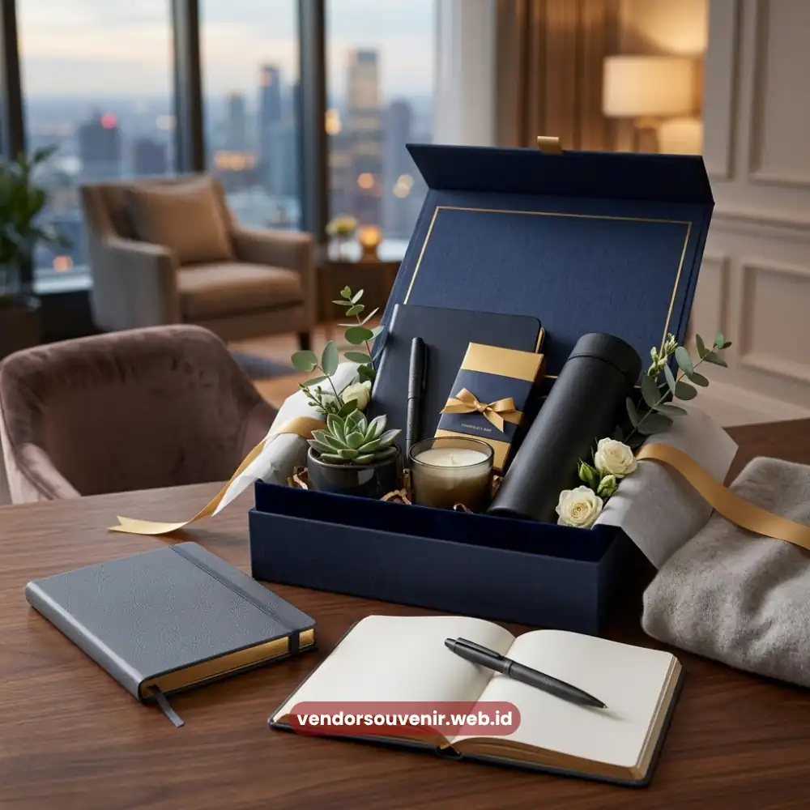

Daftar Isi
Hadiah karyawan baru yang ideal adalah barang fungsional yang tetap dipakai sehari-hari. Bukan sekadar formalitas seremonial semata pada hari pertama bergabung dengan perusahaan.
Tumbler custom, tas kerja, dan starter kit alat tulis termasuk pilihan paling diminati. Alasannya karena barang tersebut praktis dan mudah dibawa ke berbagai situasi kerja.
Perusahaan yang memberikan hadiah tepat sejak hari pertama umumnya membangun kesan positif. Kesan tersebut kemudian bertahan lama pada karyawan baru.
- Hadiah karyawan baru sebaiknya fungsional, bukan sekadar dekoratif, agar benar-benar terpakai.
- Kategori populer meliputi alat tulis premium, botol minum, tas kerja, dan perlengkapan kerja dari rumah.
- Custom logo pada hadiah memperkuat pengenalan brand sekaligus rasa memiliki karyawan terhadap perusahaan.
- Budget dapat disesuaikan bertahap, dari opsi ekonomis hingga premium, tanpa mengurangi kesan profesional.
- Vendor Souvenir menyediakan layanan custom desain untuk kebutuhan hadiah onboarding perusahaan Anda.
Mengapa Hadiah Karyawan Baru Penting bagi Perusahaan?
Momen pertama karyawan baru masuk kerja adalah titik krusial yang membentuk persepsi mereka. Persepsi tersebut mengarah terhadap budaya perusahaan secara keseluruhan.
Hadiah karyawan baru berfungsi sebagai simbol sambutan yang menunjukkan apresiasi perusahaan. Menunjukkan bahwa perusahaan menghargai kehadiran mereka sejak hari pertama, bukan hanya menganggap mereka sebagai nomor induk pegawai baru.
Hadiah sebagai Bagian dari Employer Branding
Perusahaan yang konsisten memberikan hadiah bermakna kepada karyawan baru secara tidak langsung membangun citra. Yaitu citra sebagai tempat kerja yang peduli terhadap kesejahteraan tim.
Kesan ini sering dibagikan karyawan kepada lingkaran sosialnya, baik secara langsung maupun melalui media sosial yang mereka miliki. Sehingga turut memperkuat reputasi perusahaan sebagai pemberi kerja yang atraktif bagi talenta baru.
Dampak terhadap Rasa Keterikatan Karyawan
Karyawan yang merasa disambut dengan baik cenderung lebih cepat beradaptasi dan menunjukkan rasa keterikatan terhadap perusahaan.
Hadiah fungsional yang dipakai setiap hari, seperti tumbler atau tas kerja, secara berkelanjutan mengingatkan karyawan pada momen penyambutan tersebut. Sehingga turut memperkuat loyalitas jangka panjang.
Apa Saja Jenis Hadiah Karyawan Baru yang Fungsional?
Hadiah karyawan baru yang fungsional adalah barang yang dapat digunakan secara rutin, baik dalam aktivitas kerja maupun kehidupan sehari-hari. Sehingga nilai gunanya jauh melampaui nilai simbolisnya semata.
Alat Tulis dan Perlengkapan Kerja Premium
Notebook dengan sampul kulit sintetis, pulpen berkualitas, dan organizer meja merupakan pilihan klasik yang selalu relevan di lingkungan kantor.
Barang-barang ini mudah dipersonalisasi dengan logo perusahaan pada bagian sampul atau badan produk. Menjadikannya media branding yang halus namun konsisten terlihat setiap hari kerja.
Botol Minum dan Tumbler Custom
Tumbler atau botol minum custom logo menjadi salah satu hadiah karyawan baru paling diminati karena sifatnya yang praktis dan ramah lingkungan.
Karyawan yang membawa tumbler ini ke berbagai tempat, termasuk luar kantor, sangat menguntungkan. Secara tidak langsung turut memperluas visibilitas brand perusahaan.
Tas Kerja dan Tas Laptop
Tas kerja berkualitas memberikan kesan profesional sekaligus membantu karyawan baru dalam mobilitas harian. Terutama bagi mereka yang harus membawa laptop dan dokumen kerja.
Desain yang netral namun tetap menampilkan identitas perusahaan secara elegan sangat direkomendasikan. Akan membuat tas ini nyaman dipakai dalam jangka panjang.
Starter Kit Perlengkapan Kerja dari Rumah
Bagi perusahaan dengan skema kerja hybrid atau remote, starter kit sangat relevan. Berupa mouse pad, charger portable, dan headset dapat menjadi hadiah karyawan baru.
Kit semacam ini menunjukkan bahwa perusahaan memahami kebutuhan teknis karyawan. Khususnya pemahaman di era kerja fleksibel saat ini.
Merchandise Gaya Hidup Kekinian
Selain perlengkapan kerja klasik, tren hadiah karyawan baru juga mengarah pada barang gaya hidup. Seperti totebag kanvas, jaket ringan, atau aksesori meja kerja yang estetik.
Barang-barang ini cocok untuk perusahaan dengan budaya kerja yang lebih santai. Cocok bagi mereka yang ingin menampilkan citra brand yang modern.
Bagaimana Cara Memilih Hadiah Karyawan Baru yang Tepat?
Pemilihan hadiah karyawan baru sebaiknya mempertimbangkan kesesuaian dengan budaya kerja dan kebutuhan fungsional karyawan. Serta konsistensi dengan identitas visual perusahaan.
Sesuaikan dengan Budaya dan Identitas Perusahaan
Perusahaan dengan budaya kerja formal umumnya lebih cocok memberikan hadiah bernuansa elegan. Seperti notebook kulit atau tumbler stainless premium.
Sementara perusahaan dengan budaya kerja kreatif dapat memilih merchandise yang lebih playful dan berwarna. Kesesuaian ini penting agar hadiah terasa autentik, bukan sekadar formalitas seremonial semata.
Pertimbangkan Frekuensi Penggunaan
Barang yang dipakai setiap hari, seperti alat tulis dan botol minum, sangat berdampak. Umumnya memberikan dampak branding yang lebih berkelanjutan dibandingkan barang yang jarang digunakan.
Semakin sering barang tersebut terlihat oleh karyawan maupun orang di sekitarnya. Semakin kuat pula pengulangan visual identitas perusahaan yang tertanam.

Hadiah Karyawan Baru dengan Custom Logo Perusahaan
Perhatikan Kualitas Material dan Finishing
Kualitas material sangat memengaruhi daya tahan hadiah dan persepsi karyawan terhadap perusahaan. Hadiah dengan kualitas rendah dapat menimbulkan kesan sebaliknya dari yang diharapkan.
Sehingga penting memastikan bahan dan proses finishing, termasuk teknik cetak logo. Dikerjakan secara rapi dan tahan lama.
Rencanakan Anggaran secara Bertahap
Anggaran hadiah karyawan baru dapat disusun dalam beberapa tingkatan. Misalnya paket dasar untuk staf operasional dan paket premium untuk posisi manajerial.
Pendekatan bertahap ini memungkinkan perusahaan tetap memberikan kesan positif kepada seluruh karyawan. Tanpa membebani anggaran secara berlebihan.
Kesalahan Umum dalam Memilih Hadiah Karyawan Baru
Beberapa perusahaan cenderung memilih hadiah generik tanpa mempertimbangkan relevansi fungsional. Sehingga barang tersebut akhirnya tidak terpakai dan menjadi pemborosan anggaran.
Kesalahan lain yang sering terjadi adalah mengabaikan konsistensi desain logo. Sehingga hadiah terkesan tidak profesional meski materialnya berkualitas baik.
Selain itu, banyak perusahaan tidak mempertimbangkan waktu produksi dan pengiriman. Sehingga hadiah tidak siap tepat pada hari pertama karyawan baru bergabung.

Vendor Souvenir Siap Membantu Kebutuhan Onboarding Anda
Hadiah karyawan baru yang bermanfaat dan fungsional terbukti mampu memperkuat kesan pertama. Membangun employer branding, sekaligus meningkatkan rasa keterikatan karyawan terhadap perusahaan.
Kunci utamanya terletak pada pemilihan barang yang relevan dengan kebutuhan harian karyawan, konsisten dengan identitas visual perusahaan, dan diproduksi dengan kualitas yang terjaga.
Jika perusahaan Anda sedang menyiapkan program onboarding dan membutuhkan solusi hadiah. Hadiah karyawan baru yang praktis, elegan, dan mudah dipersonalisasi.
Vendor Souvenir siap membantu mewujudkan konsep tersebut. Konsultasikan kebutuhan desain dan jumlah pesanan Anda bersama tim Vendor Souvenir untuk mendapatkan hasil maksimal.
Pertanyaan yang Sering Diajukan (FAQ)
Apa hadiah karyawan baru yang paling sering dipilih perusahaan?
Tumbler custom logo, notebook premium, dan tas kerja termasuk hadiah karyawan baru yang paling sering dipilih karena sifatnya yang fungsional dan mudah dipakai sehari-hari.
Apakah hadiah karyawan baru harus selalu menggunakan logo perusahaan?
Tidak selalu wajib, namun mencantumkan logo perusahaan secara elegan pada hadiah dapat memperkuat identitas brand dan menciptakan konsistensi visual di lingkungan kerja.
Berapa jumlah minimal pemesanan souvenir untuk hadiah karyawan baru?
Jumlah minimal pemesanan bervariasi tergantung jenis produk dan kebijakan produsen, sehingga sebaiknya dikonfirmasikan langsung sesuai kebutuhan perusahaan.
Apakah hadiah karyawan baru bisa disesuaikan dengan budget terbatas?
Bisa, karena tersedia berbagai kategori produk dengan rentang harga berbeda, mulai dari alat tulis sederhana hingga merchandise premium, sehingga dapat disesuaikan dengan anggaran perusahaan.
Kapan waktu terbaik memesan hadiah karyawan baru sebelum hari onboarding?
Sebaiknya pemesanan dilakukan jauh sebelum tanggal onboarding untuk mengantisipasi proses desain, produksi, dan pengiriman, sehingga hadiah siap tepat waktu pada hari pertama karyawan bergabung.
Maroon Souvenir
Partner Corporate Gift terpercaya di Indonesia. Berpengalaman melayani ratusan perusahaan sejak 2018.
Lihat Portofolio Kami